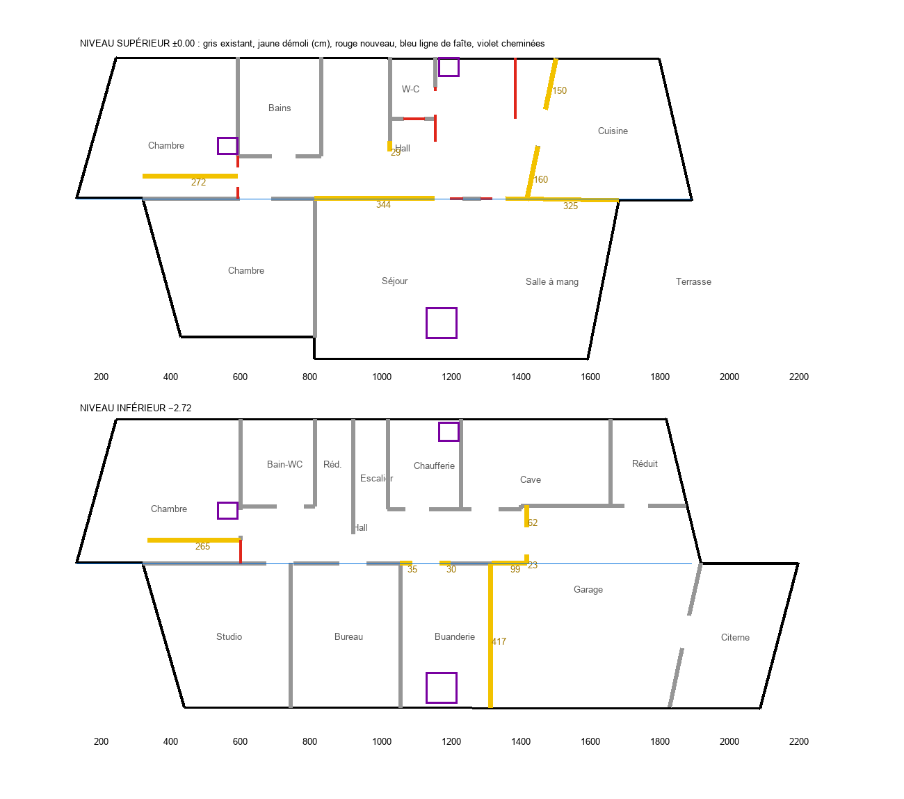

Prédimensionnement : ce que porte chaque mur que le projet ouvre ou démolit, ce qui doit le remplacer et ce que l’ingénieur civil doit vérifier.
2 novembre 2026. Préparé avec le skill skills/architecture/structural-statics.md et le calculateur scripts/statics/wall_removal.py, à partir des plans de 1963–64 et du modèle du projet (artifact/src/projet.html, variante de base).
Statut. Ce document est un prédimensionnement pour préparer et contrôler le travail de l'ingénieur civil, pas une vérification. Il ne remplace pas son dimensionnement signé. Les hypothèses sont numérotées H1 à H9 ; les points qui restent à vérifier sont marqués ⚠.
Sources : - Plans d'étages (2 pages, scans) ; - coupes transversales du 17.9.63 et du 9.4.64 (« valable », reçue le 29.4.64) ; - façades du 20.9.63 ; - CECB de 2025 : murs extérieurs en briques ou béton, doublés de 5 à 6 cm d'isolant ; 10 cm d'isolation entre chevrons ; - mails de Riviera Properties du 24.9 et du 2.11.2026 : mêmes plans, pas d'autre document.
Les plans sont dans le Drive « Galarty 3 - Corseaux » et dans ~/Downloads.
| Élément | Lecture | Où |
|---|---|---|
| Dalle ±0.00 | béton armé 14 cm, dessus brut à −0,07 | coupe 17.9.63, « DALLE BA 14 CM » |
| ~17 cm : fini ±0,00, brut −0,08, 25 cm jusqu'au plafond | coupe 9.4.64 | |
| Toiture | 2 pans à 27 %, faîte au-dessus du refend, débord de 54 cm | coupes |
| couverture ardoise Eternit en 1964 ; toiture refaite en 1998 (couverture actuelle inconnue) | coupes, mails | |
| lambrissage sous les chevrons : plafonds en pente, pas de combles | coupes | |
| Refend | 15 cm, sur les deux niveaux ; monte jusqu'au faîte | cotes « 15 » des plans, coupes |
| Poutre du garage | le long du bord nord du garage, en pointillés, cote « 25 » | plan inférieur |
| retombée « 46 » au droit du refend | coupe 1963 | |
| appui ouest sur le retour de ~1 m et le mur de 25 cm ; appui est sur le mur garage–citerne | plan inférieur | |
| Mur garage–buanderie | 25 cm, du bord nord du garage à la façade sud | plan inférieur |
| Bandeau sud | de −0,64 à +0,85 (« 149 ») ; la dalle déborde d'environ 0,5 m sur la façade du niveau inférieur | coupes, façades |
| Fondations | semelles, fond à −3,52 m ; « voir plan ingénieur » | coupes |
| Altitude | ±0,00 = 483,35 m | modèle du site |

| # | Élément (poste du devis) | Ce que fait le projet | Porteur ? | Résultat | Verdict |
|---|---|---|---|---|---|
| 1 | Refend supérieur séjour–hall, 3,44 m (stairw, beam) |
démoli | oui, porte le faîte | poutre faîtière C1 : GL24h 140×320 (ou 100×360, ou IPE 180) | OUI SI poutre faîtière + trumeau |
| 2 | Refend supérieur salle à manger–cuisine, 3,25 m (beam) |
démoli | oui, porte le faîte | poutre faîtière C2 : GL24h 100×360 ou 140×320 ; appui est sur l'angle du mur cuisine–terrasse | OUI SI poutre faîtière |
| 3 | Trumeau de 1,20 m sous le faîte, niveau supérieur (ridge) |
gardé et prolongé | oui | 72 kN, 0,40 N/mm² | OUI |
| 4 | Trumeau de 1,20 m du refend inférieur (ridge) |
gardé | oui | 213 kN, 1,18 N/mm², utilisation 0,59 sans élancement | ⚠ limite |
| 5 | Refend inférieur : deux portes élargies en une de 1,45 m (beam) |
35 + 30 cm démolis | oui, porte la dalle des deux côtés | linteau C4 : IPE 160 ; sommiers béton de 18 cm, car la poutre posée directement exercerait 4,3 N/mm² | OUI SI linteau + sommiers + étais |
| 6 | Mur garage–buanderie, 25 cm (beam) |
démoli | oui : appui de la poutre du garage, et peut-être de la dalle au-dessus de la buanderie | voir 7 | ⚠ NON tel quel |
| 7 | Retour de 99 cm à l'angle nord-ouest du garage (beam) |
démoli | oui : appui ouest de la poutre du garage (≈ 200 kN) | C5 : pilier en L gardé (0,73 N/mm²) ou poteau SHS 100×100×5 + semelle d'environ 1 × 1 m | NON tel quel ; OUI SI pilier ou poteau |
| 8 | Murs garage–hall, 62 + 23 cm | démolis | probablement des cloisons | — | probablement OUI ; vérifier sur place |
| 9 | Cloison nord-ouest du niveau inférieur, 2,65 m (z 7,25) | démolie | probablement non (sous la dalle, parallèle au refend) | — | OUI ; démolir en 2 temps, voir si la dalle s'est appuyée dessus |
| 10 | Cloison nord-ouest du niveau supérieur, 2,72 m | démolie | non : sous les chevrons, ne porte pas la dalle | — | OUI |
| 11 | Murs biais cuisine–hall, 1,50 + 1,60 m | démolis | probablement non : parallèles aux chevrons | — | OUI ; ⚠ vérifier la charpente au-dessus |
| 12 | Cheminée du séjour et cloison séjour–salle à manger (pier) |
démolies | les plans montrent une cloison légère et la cheminée, aucune poutre dessinée | — | probablement OUI ; ⚠ chercher une poutre ou un chevêtre sur place |
| 13 | Nouvelle porte-fenêtre de 2,90 m, salle à manger (fdoor, open) |
percement dans un mur plein | le mur porte l'avant-toit | linteau C6a : GL24h 100×320 (flèche limitée à 1/700 pour le vitrage) | OUI pour le linteau |
| 14 | Allège du bandeau sous cette porte (fdoor) |
découpée, en partie au-dessus de la porte du garage | probablement oui (bandeau de 1,49 m de haut au-dessus de 4,41 m d'ouverture) | secours C6b : HEB 280 sous le bord de dalle, réactions d'environ 125 kN | ⚠ sonder ; ou décaler la porte |
| 15 | Allèges de la porte-fenêtre du séjour (2,85 m) et de la chambre parentale (1,97 m) (fdoor, bdoor) |
découpées | le bandeau ne franchit ici que 1,87 et 1,97 m d'ouverture au niveau inférieur | — | probablement OUI ; même sondage que 14 |
| 16 | Allège de la fenêtre d'escalier, façade nord (north) |
découpée sous le linteau existant | non | — | OUI |
| 17 | Porte d'atelier de 1,2 m, façade sud de l'ancienne citerne (open) |
percement | oui : bord de la terrasse au-dessus | C7 : IPE 120 ; mur peut-être en béton (citerne) | OUI SI linteau ou vérification du voile |
| 18 | Porte de 90 cm entre salle familiale et atelier (wdoor) |
trappe agrandie dans le mur de 15 cm | oui : rive de dalle | C8 : IPE 80 à 100 | OUI |
Les sorties complètes sont dans resultats/.
Réaction ouest : 199,7 kN à l'ELU (caractéristique : 114,6 permanente, 26,3 utile, 4,2 neige). Les options pour la reprendre :
| Option | Contrainte ou résistance | Utilisation |
|---|---|---|
| (a) retour de 99 cm seul | 1,34 N/mm² | 0,67, avant élancement |
| (a) retour + 0,50 m du mur de 25 cm, en L | 0,73 N/mm² | 0,37 |
| (b) poteau SHS 80×80×5 | — | 0,93 (trop juste) |
| (b) poteau SHS 100×100×5 | N_Rd = 317 kN | 0,63 |
| (b) poteau HEB 120 | — | 0,39 |
Avec l'option (b), il faut une semelle d'environ 1,0 × 1,0 m pour q_Rd = 200 kN/m². Le sol en béton brut du garage ne suffit pas.
⚠ La réaction est (≈ 234 kN) existe déjà aujourd'hui. Elle ne passerait pas sur de la brique (6,2 N/mm²) : l'appui est est donc probablement en béton (mur de la citerne). - Bandeau sud. - C6a, linteau de la nouvelle porte-fenêtre : l'avant-toit apporte 4,7 kN/m, plus 2,7 de neige. Une GL24h 100×320 suffit avec une flèche ≤ portée/700 pour le vitrage. - C6b, secours si l'allège ne peut pas être coupée : une poutre sous le bord de dalle franchit la porte du garage (4,41 m). Elle reprend toute la rive : réaction de dalle, porte-à-faux de 0,5 m, bandeau, façade de la salle à manger et avant-toit. Résultat : HEB 280, réactions d'environ 125 kN, limite portée/700 parce que la porte du garage devient une baie coulissante. C'est une retombée de 28 cm dans la salle familiale. - Le plus simple est souvent de positionner la porte-fenêtre pour qu'elle n'entaille pas l'allège au-dessus de la porte du garage, dans la mesure du possible. - Petits linteaux. - C7, porte d'atelier de 1,2 m : la terrasse apporte g = 19,5 et q = 8,0 kN/m. IPE 120 ; si le mur de la citerne est en béton, l'ingénieur peut se passer de linteau. - C8, porte de 90 cm : IPE 80 à 100. - Étaiement. Pendant les travaux sur le refend, il faut porter 38 kN/m de charge permanente (48 kN/m si les étages restent habités). Avec deux rangées d'étais tous les mètres, cela fait 19 à 25 kN par étai. Les étais posés sur la dalle du niveau inférieur doivent descendre jusqu'au sol.
Les listes de murs sont générées depuis le modèle par bracing_from_model.py (hypothèse H9). Rigidité relative : somme des trumeaux encastrés aux deux bouts.
| Niveau | Direction | Section de murs | Rigidité | Excentricité avant → après |
|---|---|---|---|---|
| Inférieur | est-ouest (x) | −9 % | −13 % | 21 % → 28 % de la largeur |
| Inférieur | nord-sud (y) | −12 % | −12 % | 1 % → 2 % |
| Supérieur | est-ouest (x) | −26 % | −40 % | 4 % → 24 % |
| Supérieur | nord-sud (y) | 0 % | −4 % | 19 % → 20 % |
Lecture : - Le niveau supérieur ne porte que la toiture, qui est légère ; la perte de 40 % pèse donc moins qu'elle n'en a l'air. - Au niveau inférieur, la perte vient du mur garage–buanderie et des portes élargies. Elle s'ajoute aux grandes baies de la façade sud. - Les seuils (10 % de perte, 10 % d'excentricité) sont des valeurs de tri du skill, pas des limites SIA. - Le trumeau de 1,20 m est compté comme deux morceaux (0,52 + 0,68 m), ce qui sous-estime sa rigidité.
⚠ Corseaux est en zone Z2 (a_gd = 1,0 m/s²). L'OFEV demande d'examiner le bâtiment au plus tard lors d'une transformation importante (SIA 269 §6.1.2) : c'est le cas ici.